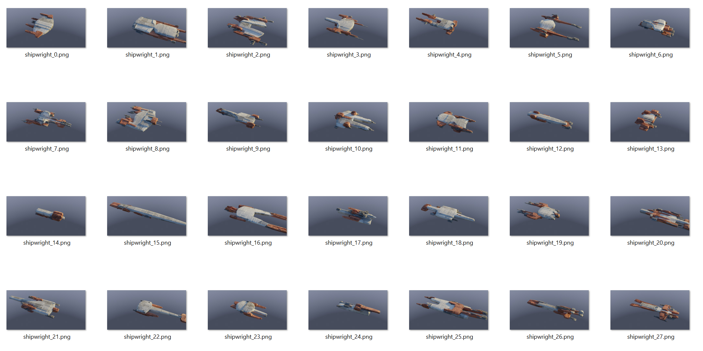

Iterator
To assess many possible combinations, the Iterator feature can use the camera in your scene to automatically render a range of Shipwright master seed combinations to a directory of your choosing.
Iterator Controls.
Using the Iterator
The iterator will produce a set of images, each image is a preview of the Shipwright when it is in that seed configuration.
The name of the filename will display the master seed value used.
Seed Range: set the master seed range used to render out different combinations.
File Path: The output directory for the file images.
Render Engine: Optionally choose a render engine different to the main scene. The Iterator will then use the settings of the alternative renderer.
Start: start an iterator process. Whilst the images are rendering, Blender may appear to freeze. You can check whether the images are being output by navigating to the output directory to see if the images are being created.
Cancelling the operation
Whilst running, there is a file called running.ack that you can use to stop the iterator and unfreeze Blender. Remove running.ack, and after rendering an image Blender will check for the presence of this file. If this file no longer exists, it will cancel the operation.
This is similar to the iterator function in KIT OPS SYNTH.